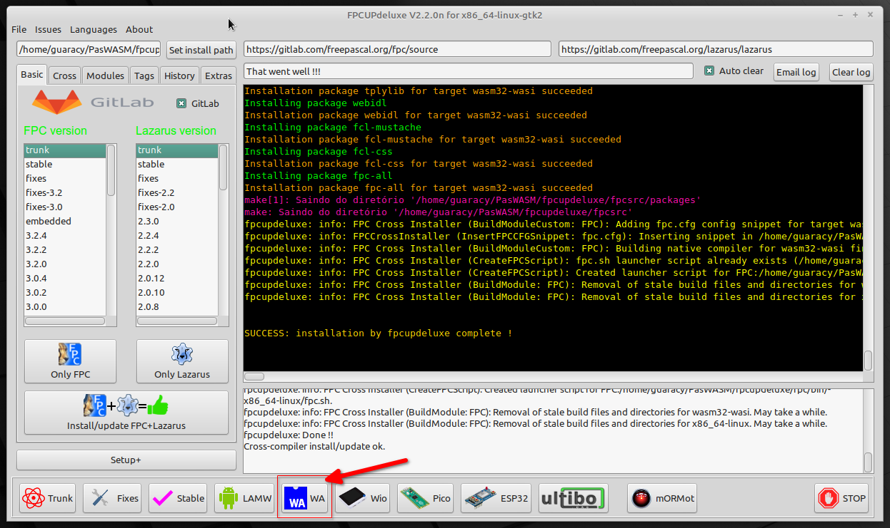
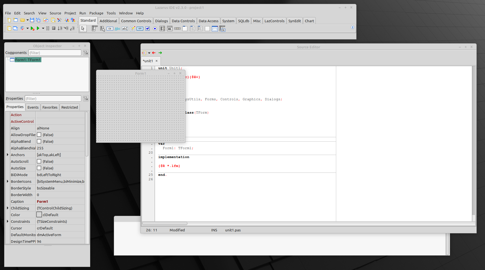
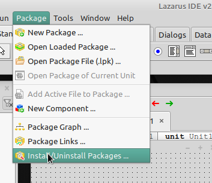
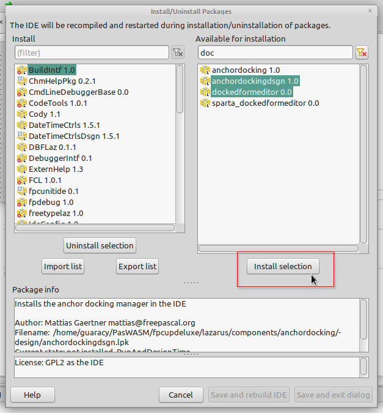
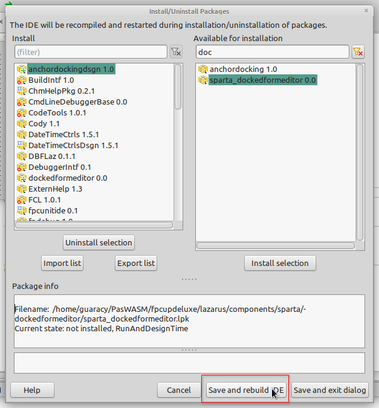
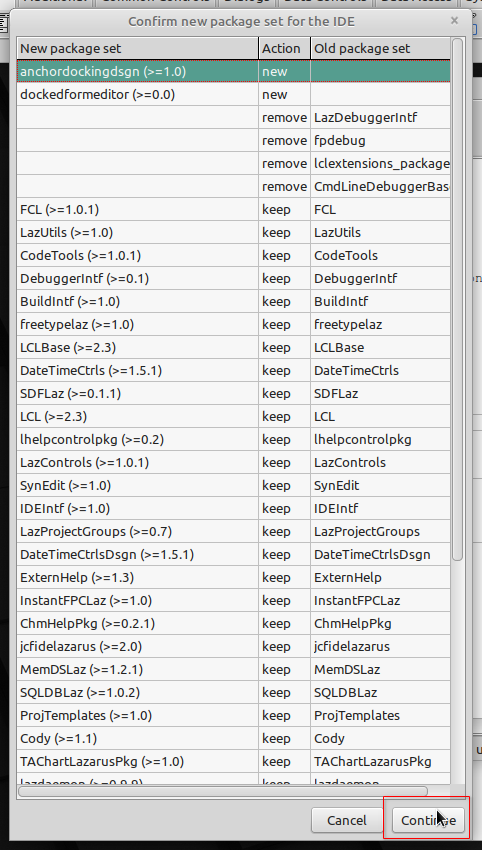
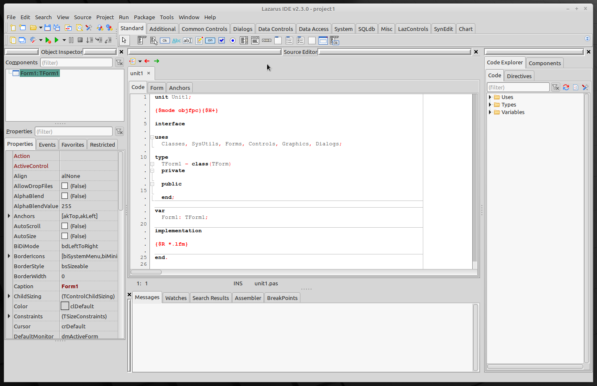

Instalação
Caso você já possua o Lazarus instalado, pode seguir as opções existentes na página pas2js e pular para a próxima página. Pessoalmente, acho mais fácil utilizar o fpcupdeluxe que bastam alguns cliques para que as coisas funcionem.
fpcupdeluxe
TL;DR;
Crie um diretório, baixe o fpcupdeluxe, execute, clique no botão WA e aguarde o final da instalação.

Com o fpcupdeluxe é possível instalar o Lazarus e outras diversas opções de forma simples. Caso você ainda não tenha o Lazarus instalado é interessante ler os requisitos necessários para que a instalação seja bem sucedida. Siga os seguintes passos:
- Crie um diretório (e.g. PasWASM)
- Baixe a última versão do fpcupdeluxe e coloque no diretório criado. Só tome cuidado para baixar a versão para o seu SO.
- Dê permissões de execução se for o caso (
chmod +x fpcupdeluxe) - Execute o programa
./fpcupdeluxe - Escolha o botão inferior WA
- O programa irá criar os diretórios, baixar e compilar o programas necessários.
- Feche o programa e renomeie o ícone criado no desktop (e.g. PasWASM).
Janela única
Como padrão, o Lazarus é instalado com as janelas todas soltas.

Não é tão ruim de trabalhar mas eu prefiro a IDE em uma única janela. Acho que o Lazarus deveria vir no modo janela única ou, pelo menos, ter uma opção no menu Windows para facilitar o processo assim como no GIMP. Como eu não gosto daquele monte de janelas espalhadas pelo monitor, a primeira coisa que eu faço é instalar os pacotes necessários para que fique em uma janela.
Acesse a opção Install/Uninstall Packages ... do menu Packages 
Selecione os pacotes anchordockingdsgn 1.0 e dockedformeditor 0.0 e clique em Install Selection. 
Clique no botão Save and rebuild IDE 
Na próxima janela, clique em Continue 
Em pouco tempo você terá uma nova IDE. Eu acho melhor de trabalhar. 
Agora é só deixar a IDE do seu gosto. Alguns exemplos de como configurar a aparência da IDE podem ser encontradas aqui. Se você é iniciante, pule a parte onde tem New StudioPlus Desktops.
Atualmente estou usando a fonte JetBrains Mono. É free e open source.
Também acho que os temas fornecidos com a distribuição deixam um
pouco a desejar. Alguns
temas
que você pode instalar. Baixe os temas desejados (arquivo .xml) e
copie para ~/PasWASM/fpcupdeluxe/config_lazarus/userschemes
(provavelmente deverá criar o diretório userschemes). Para utilizar
os novos temas você deverá reinicializar o Lazarus.
Era isso. O ambiente já está pronto para ser utilizado.